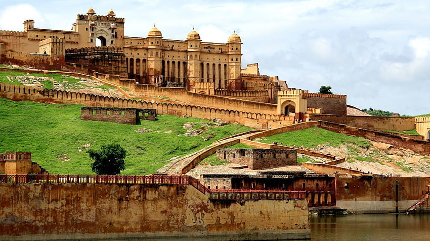
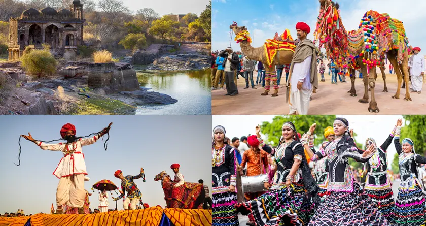
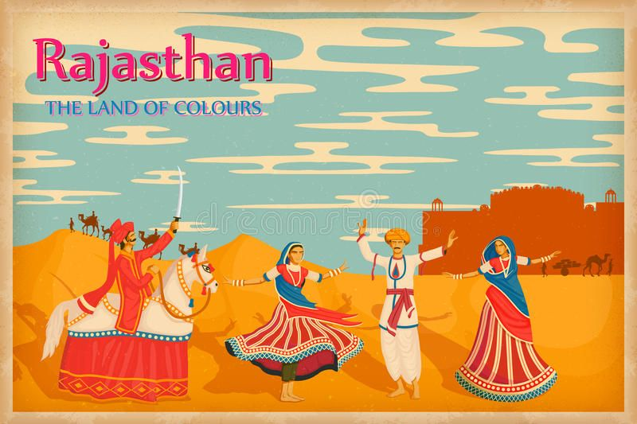

╰┈➤Rajasthan Information
| ✧ Aspect | Information |
|---|---|
| ✧ Capital | Jaipur |
| ✧ Chief minister | Bhajan Lal Sharma |
| ✧ Largest City | Jaipur |
| ✧ Districts | 50 |
| ✧ Official Language | Hindi |
| ✧ Other Language | Rajasthani |
| ✧ Population | Approximately 68.6 million |
| ✧ Area | 342,239 square kilometers |
| ✧ Major Rivers | Chambal, Banas, Luni, Sabarmati |
| ✧ Major Industries | Tourism, Agriculture, Mineral-based industries, Handicrafts |
| ✧ Popular Place | Amer Fort, Jaipur; Hawa Mahal, Jaipur; Mehrangarh Fort, Jodhpur; Udaipur City Palace, Udaipur; Jaisalmer Fort, Jaisalmer |
╰┈➤ Traditional Dresses of Rajasthan
Some of the traditional dresses of Rajasthan are the colorful Ghagra and Choli for women and Dhoti and angarkha for men, accompanied by comfortable Jootis or Mojris for both of them.
╰┈➤History of Rajasthan
Rajasthan, the largest state in India by area, boasts a rich and vibrant history that spans several millennia. Its story begins with the ancient Indus Valley Civilization, evidenced by archaeological sites like Kalibangan and Balathal. The region later saw the rise and fall of various kingdoms, including the Mauryas, Guptas, and Kushans. However, it was during the medieval period that Rajasthan truly flourished, with the emergence of powerful Rajput clans such as the Chauhans, Rathores, and Sisodias.
The Rajput era is characterized by tales of chivalry, valor, and grandeur. Prominent among these were the kingdoms of Mewar, Marwar, and Amber (later known as Jaipur). The Rajputs fiercely resisted foreign invasions, notably the incursions of the Delhi Sultanate and later the Mughal Empire. The heroic tales of figures like Maharana Pratap of Mewar and Rana Sanga of Chittor resonate deeply in Rajasthan's history.
By the early 18th century, the Marathas began asserting their influence in the region, followed by the rise of the British East India Company. Rajasthan gradually came under British suzerainty, with several princely states entering into treaties with the British Crown. During India's struggle for independence, Rajasthan played a significant role, with leaders like Maharaja Umaid Singh of Jodhpur and Maharaja Hanwant Singh of Jodhpur actively participating in the nationalist movement.
After India gained independence in 1947, Rajasthan was integrated into the Indian Union as a princely state. The region witnessed rapid development in various sectors, including agriculture, infrastructure, and industry. Today, Rajasthan is renowned for its magnificent palaces, forts, and temples, which stand as testament to its glorious past. The state's rich cultural heritage, vibrant festivals like the Pushkar Camel Fair and Desert Festival, and its hospitable people continue to attract tourists from around the world, ensuring that the history of Rajasthan remains alive and celebrated.
Thank you
╰┈➤Rajasthan Pictures




